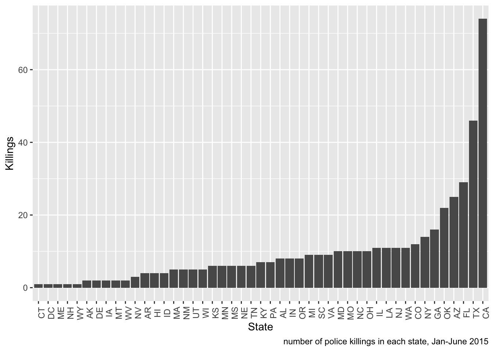
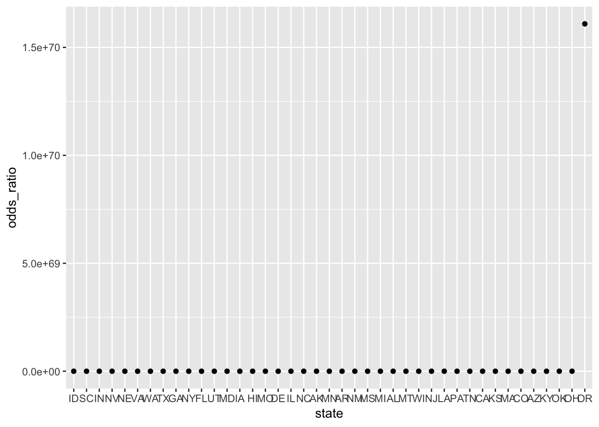
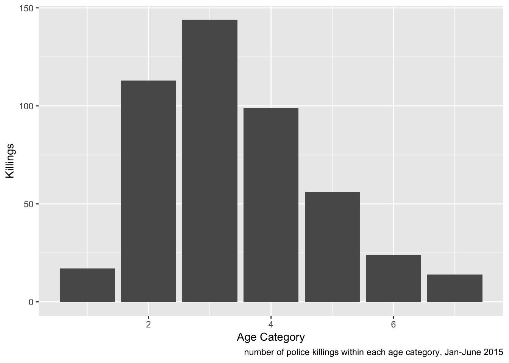

Exploratory Analysis
Chirag Shah
2018-12-02
Time to do some exploration!
homicides_data = read_csv("https://raw.githubusercontent.com/fivethirtyeight/data/master/police-killings/police_killings.csv") %>%
janitor::clean_names()## Parsed with column specification:
## cols(
## .default = col_character(),
## day = col_integer(),
## year = col_integer(),
## latitude = col_double(),
## longitude = col_double(),
## state_fp = col_integer(),
## county_fp = col_integer(),
## tract_ce = col_integer(),
## geo_id = col_double(),
## county_id = col_integer(),
## pop = col_integer(),
## h_income = col_integer(),
## county_income = col_integer(),
## comp_income = col_double(),
## county_bucket = col_integer(),
## nat_bucket = col_integer(),
## urate = col_double(),
## college = col_double()
## )## See spec(...) for full column specifications.homicides_data = homicides_data %>%
mutate(month = factor(month, levels = c("January", "February", "March", "April", "May", "June", "July", "August", "September", "October", "November", "December")),
year = as.integer(year))
homicides_data %>%
group_by(state) %>%
summarise(total_killed = n()) %>%
mutate(state = forcats::fct_reorder(state, total_killed)) %>%
ggplot(aes(x = state, y = total_killed)) +
geom_col(size = 3) +
labs(x = "State", y = "Killings",
caption = "number of police killings in each state, Jan-June 2015") +
theme(axis.text.x = element_text(angle = 90))
homicides_data %>%
group_by(state) %>%
summarise(total_killed = n()) %>%
summarise(mean_killed = mean(total_killed)) %>%
mutate(std_error = stderr()) %>%
mutate(upper_bound = mean_killed + 1.96 * std_error,
lower_bound = mean_killed - 1.96 * std_error)## # A tibble: 1 x 4
## mean_killed std_error upper_bound lower_bound
## <dbl> <int> <dbl> <dbl>
## 1 9.94 2 13.9 6.02homicides_data %>%
group_by(raceethnicity) %>%
summarise(total_killed = n()) %>%
mutate(raceethnicity = forcats::fct_reorder(raceethnicity, total_killed)) %>%
ggplot(aes(x = raceethnicity, y = total_killed, fill = raceethnicity)) +
geom_col(size = 3) +
labs(x = "State", y = "Killings",
caption = "number of police killings in each state, Jan-June 2015") +
theme(axis.text.x = element_text(angle = 90)) +
scale_fill_brewer(palette = "BrBG")
homicides_data %>%
mutate(agecat = ifelse(age %in% 0:18, 1, ifelse(age %in% 19:28, 2, ifelse(age %in% 29:38, 3, ifelse(age %in% 39:48, 4, ifelse(age %in% 49:58, 5, ifelse(age %in% 59:68, 6, 7))))))) %>%
group_by(agecat) %>%
summarise(total_killed = n()) %>%
ggplot(aes(x = agecat, y = total_killed)) +
geom_col(size = 3) +
labs(x = "Age Category", y = "Killings",
caption = "number of police killings within each age category, Jan-June 2015")Regression
homicides_data %>%
mutate(share_white = as.numeric(share_white)) %>%
mutate(neighborhood = ifelse(share_white %in% 50:100, 0, 1)) %>%
##0 represents a majority white neighborhood, 1 represents a majority other race neighborhood
group_by(neighborhood) %>%
summarise(total_killed = n()) %>%
ggplot(aes(x = neighborhood, y = total_killed)) +
geom_col(size = 3) +
labs(x = "Neighborhood", y = "Killings",
caption = "number of police killings within white and non-white neighborhoods, Jan-June 2015")## Warning in evalq(as.numeric(share_white), <environment>): NAs introduced by
## coercion
state_models = homicides_data %>%
mutate(share_white = as.numeric(share_white)) %>%
mutate(neighborhood = ifelse(share_white %in% 50:100, 0, 1)) %>%
##0 represents a majority white neighborhood, 1 represents a majority other race neighborhood
mutate(cause_cat = ifelse(cause == "gunshot", 1, 0)) %>%
##1 represents gunshot, 0 represents other
mutate(armed_cat = ifelse(armed == "Firearm", 1, 0)) %>%
##1 represents armed with Firearm, 0 represents armed with other or unarmed
mutate(p_income = as.numeric(p_income)) %>%
mutate(thousands_p_income = p_income/10000) %>%
group_by(state) %>%
##group by state because we want each distinct city to have a model
nest() %>%
mutate(logit_neighborhood = map(data, ~glm(neighborhood ~ cause_cat + armed_cat + thousands_p_income, family = binomial, data = .x)),
logit_neighborhood = map(logit_neighborhood, broom::tidy)) %>%
select(-data) %>%
unnest() %>%
##using nest and unnest to map the model for all distinct cities in the dataset
mutate(odds_ratio = exp(estimate),
lower_bound = exp(estimate - 1.96*std.error),
upper_bound = exp(estimate + 1.96*std.error))## Warning in evalq(as.numeric(share_white), <environment>): NAs introduced by
## coercion## Warning in evalq(as.numeric(p_income), <environment>): NAs introduced by
## coercion## Warning: glm.fit: fitted probabilities numerically 0 or 1 occurred
## Warning: glm.fit: fitted probabilities numerically 0 or 1 occurred
## Warning: glm.fit: fitted probabilities numerically 0 or 1 occurred
## Warning: glm.fit: fitted probabilities numerically 0 or 1 occurred## Warning: glm.fit: algorithm did not converge## Warning: glm.fit: fitted probabilities numerically 0 or 1 occurred## Warning: glm.fit: algorithm did not converge## Warning: glm.fit: fitted probabilities numerically 0 or 1 occurred ##defining odds ratio and upper and lower bounds for the 95% confidence intervalstate_models %>%
filter(term == "thousands_p_income") %>%
##selecting the parameter we want
select(odds_ratio, lower_bound, upper_bound, state) %>%
mutate(state = forcats::fct_reorder(state, odds_ratio)) %>%
##ordering by city_state
ggplot(aes(x = state, y = odds_ratio)) +
geom_point() 
##+ geom_errorbar(aes(ymin = lower_bound, ymax = upper_bound)) +
##adding error bars to each odds ratio to show the 95% confidence interval for the odds ratio
labs(title = "OR's for being killed in a majority other race neighborhood for a ten thousand dollar increase in average personal income",
y = "Odds ratio",
x = "State") +
theme(axis.text.x = element_text(angle = 90))## NULLstate_models %>%
filter(term == "armed_cat") %>%
##selecting the parameter we want
select(odds_ratio, lower_bound, upper_bound, state) %>%
mutate(state = forcats::fct_reorder(state, odds_ratio)) %>%
##ordering by city_state
ggplot(aes(x = state, y = odds_ratio)) +
geom_point() 
##+ geom_errorbar(aes(ymin = lower_bound, ymax = upper_bound)) +
##adding error bars to each odds ratio to show the 95% confidence interval for the odds ratio
labs(title = "OR's for being killed in a majority other race neighborhood for those who were armed with a firearm compared to those armed with other items or unarmed",
y = "Odds ratio",
x = "State") +
theme(axis.text.x = element_text(angle = 90))## NULLDoesn’t seem like there is enough power to have any substantial results. Upper and lower bounds routinely range from 0 to infinity.
Therefore create model for overall data irrespective of state.
america_model = homicides_data %>%
mutate(share_white = as.numeric(share_white)) %>%
mutate(neighborhood = ifelse(share_white %in% 50:100, 0, 1)) %>%
##0 represents a majority white neighborhood, 1 represents a majority other race neighborhood
mutate(cause_cat = ifelse(cause == "gunshot", 1, 0)) %>%
##1 represents gunshot, 0 represents other
mutate(armed_cat = ifelse(armed == "Firearm", 1, 0)) %>%
##1 represents armed with Firearm, 0 represents armed with other or unarmed
mutate(p_income = as.numeric(p_income)) %>%
mutate(thousands_p_income = p_income/10000) %>%
glm(neighborhood ~ cause_cat + armed_cat + thousands_p_income, family = binomial, data = .)## Warning in evalq(as.numeric(share_white), <environment>): NAs introduced by
## coercion## Warning in evalq(as.numeric(p_income), <environment>): NAs introduced by
## coercion##glm(solved ~ victim_sex + victim_race + victim_age, family = binomial, data = .)
broom::tidy(america_model) %>%
##tidying data
mutate(odds_ratio = exp(estimate),
lower_bound = exp(estimate - 1.96*std.error),
upper_bound = exp(estimate + 1.96*std.error)) %>%
##defining odds ratio, and upper and lower bounds of the confidence interval
select(odds_ratio, lower_bound, upper_bound) %>%
knitr::kable(digits = 3)| odds_ratio | lower_bound | upper_bound |
|---|---|---|
| 23.230 | 6.717 | 80.344 |
| 2.118 | 0.846 | 5.300 |
| 0.836 | 0.544 | 1.287 |
In this model, the range between the upper and lower bounds encompass the null value of 1, thus we cannot say that there is a difference in being killed in a neighborhood that is majority non-white among those who were armed with a firearm vs not armed with a firearm as well as with a $10000 increase in personal income, on average.